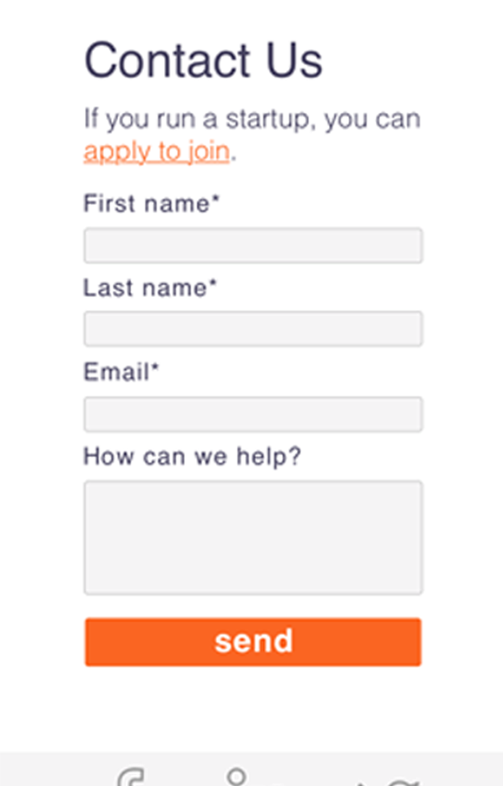
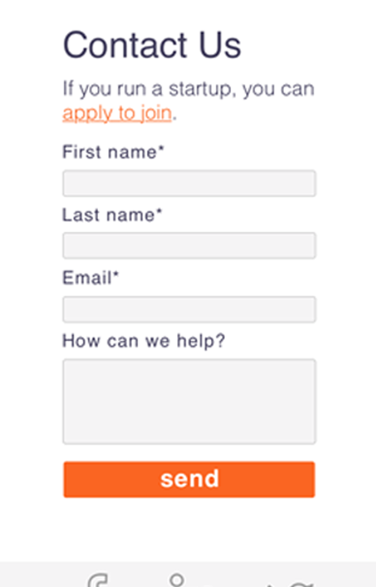

Promoting Diversity Within The Israeli Tech Scene.
 

Arab Innovators is a platform for promoting startups with Palestinian/Arab Founders. The project was commissioned by the British Embassy and developed at Founders and Coders.
Just 2% of startups in Israel are run by Arab/Palestinian people, even though they represent 20% of the population. From my research, I deduced that this is due to a range of factors: discrimination, cultural norms, and geography all play a part.
Arab Innovators aims to increase the visibility of Arab entrepreneurs in the eyes of investors, with an Events and News page that champion success stories.
The aim is to create a sense of community, while showcasing talented role models. In further iterations I would like to supplement this with a newsfeed on the landing page and more of a social media presence.
At the moment, the team and product owner are still adding to their initial database of startups and collecting feedback from their network of startups and investors.
I used: pencil and paper, Sketch App, InVision